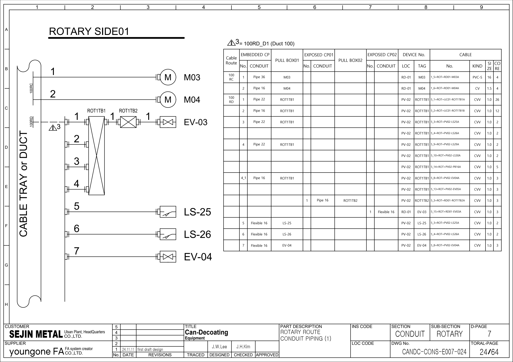

PV02 · 시공 배선·케이블 참조
64페이지 전기 시공도면을 기존 OEM Rev.2 회로도·PLC 백업의 보완 근거로 사용합니다. 표지 FOR APPROVAL, 개정란 24.11.11 first draft design. 승인·준공·실제 설치·현재 배선은 확인 전입니다. PLC 주소와 실제 단자 핀은 이 자료만으로 확정하지 않습니다.
추적 경계: ROT1TB1 → LS25–32·EV04/05, PB16. 공유 간선에 포함된 EV03은 별도 RD01 윤활 회로입니다.
1. 관련 원본 페이지
새 시공도면 · PDF 5 · 새 시공도면 · PDF 6 · 새 시공도면 · PDF 24 · 새 시공도면 · PDF 55
아래 자료는 시각 확인한 선택 행입니다. 전체 케이블·단자·I/O 목록의 완성이나 현장 수리 완료를 뜻하지 않습니다.
2. 모터 동력 간선 · 선택 행
이 항목의 동력 케이블은 선택 기록에 없습니다. 본체·센서·공유 접속함을 모터로 대신 지정하지 않습니다.
3. 접속함·센서·밸브 · 선택 행
| 근거·행 | 케이블 식별자 | FROM → TO | 종류·규격 원문 | 경로·LEN 원문 / 검토 |
|---|---|---|---|---|
| 새 시공도면 · PDF 55 5_1 | =ROT+UC01-ROT1TB1A | CR → UC-01 / ROT1TB1 · LS25–32, PB16 | DC / CVV / 25G / 1.0 SPARE 5 | 공유 접속함의 간선입니다. PV02 전용 PLC 입력 수를 의미하지 않습니다. |
| 새 시공도면 · PDF 55 5_2 | =ROT+UC01-ROT1TB1B | CR → UC-01 / ROT1TB1 · EV03/04/05 | AC / CVV / 12G / 1.0 SPARE 5 | EV03은 RD01 윤활 밸브 회로와 구분해 추적합니다. |
| 새 시공도면 · PDF 55 5_4 | =ROT+PV02-LS25A | UC-01 / ROT1TB1 → PV-02 / LS-25 | DC / CVV / 2C / 1.0 | 배관도 PDF24의 짧은 No. 표기는 다릅니다. 전체 식별자와 페이지로 찾습니다. |
| 새 시공도면 · PDF 55 5_8 | =ROT+PV02-EV04A | UC-01 / ROT1TB1 → PV-02 / EV-04 | AC / CVV / 3G / 1.0 |
4. 새 시공도면의 확인 대기
| 검토·근거 | 도면 관찰 | 영향 | 확인 작업·상태 |
|---|---|---|---|
| C06 / PV02, EV03 새 시공도면 · PDF 24 · 새 시공도면 · PDF 55 5_3, 5_4, 5_5 | 배관도 PDF24의 LS25·LS26 No.는 5_3·5_4, 케이블 목록 PDF55에서는 5_4·5_5입니다. PDF55의 5_3은 RD01 ROT1TB2 간선입니다. | 짧은 No.만 따라가면 센서와 밸브 간선이 바뀝니다. | 전체 케이블 식별자+페이지+FROM/TO로 대조하고 제작사 개정본에서 참조 순번을 확인합니다. 확인 대기 · 현장 미확인 |
현장 수리 기록 순서
- 현재 승인 도면·설비 명판·양단 케이블 표찰·접속함 ID를 대조합니다.
- 도면별 페이지·행·전체 식별자·FROM/TO를 기록합니다. No. 또는 이름만으로 연결하지 않습니다.
- 기존 OEM 회로에서 반·단자·접점·릴레이·장치 핀·PLC 주소를 찾아 구간별 전달을 확인합니다.
- PLC 원본의 입력 전달·출력 조건·알람·Reset·복수 쓰기를 수리 작업지와 함께 확인합니다.
- 관찰값·최초 불일치 구간·조치·복구·주변 공정 영향을 기록하고 승인된 절차로 확인합니다.
케이블 종류·심수·SIZE·SPARE·LEN은 도면 원문입니다. LEN을 실측 거리로, G/C/S/SB를 검증된 배선 사양으로 환산하지 않습니다. 가려진 행은 배선 근거에서 제외합니다.
원본 페이지 시각 확인
시공도면 PDF 24 · 원본 페이지 보기

시공도면 PDF 55 · 원본 페이지 보기